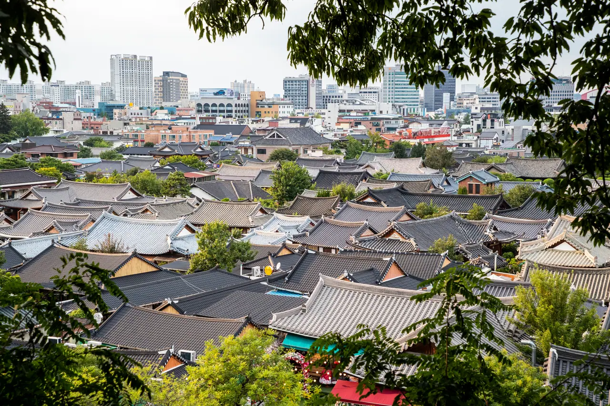
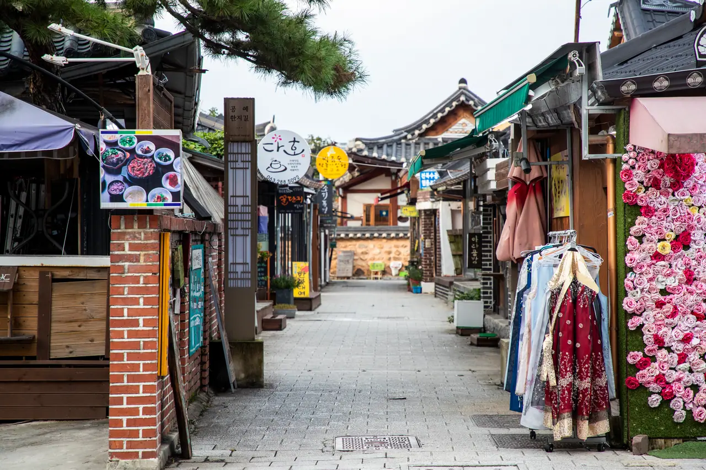
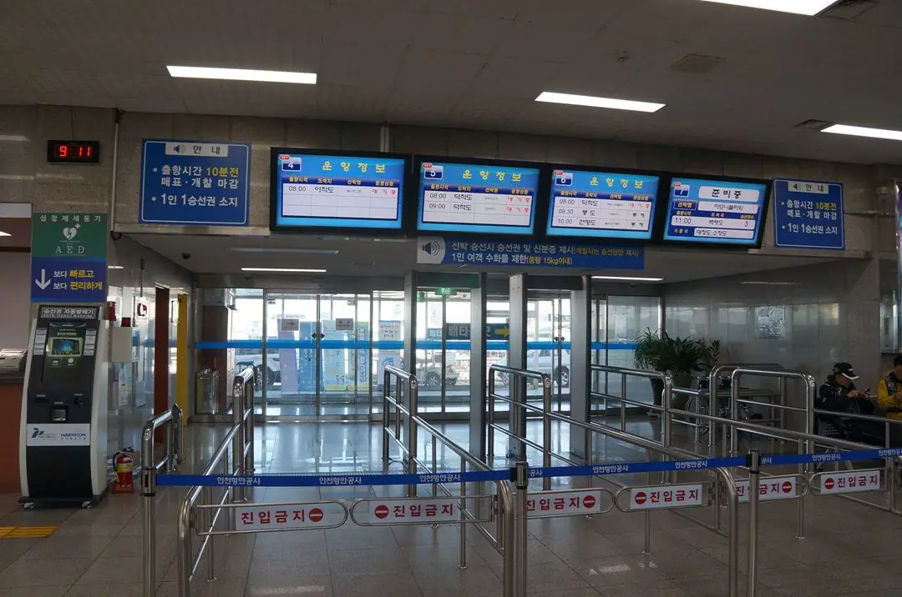
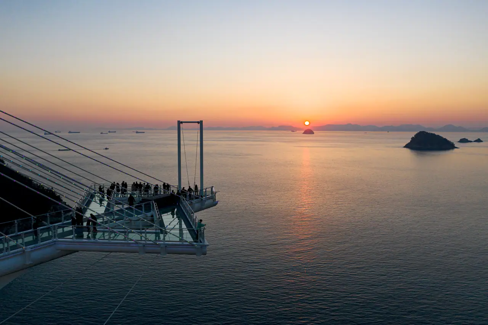
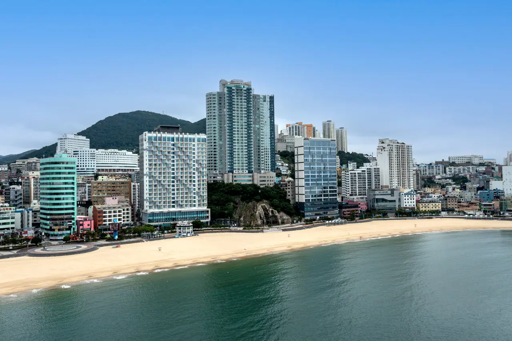
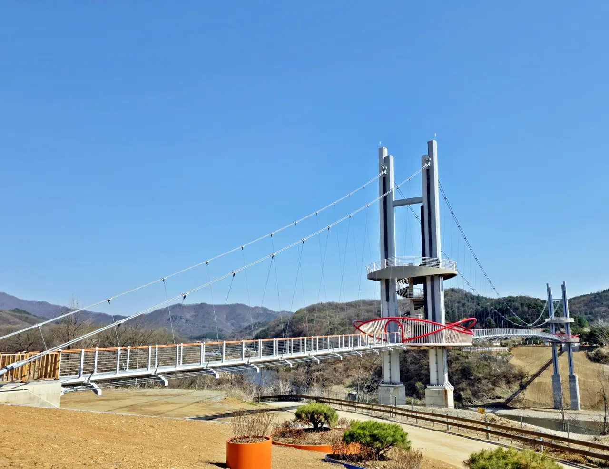
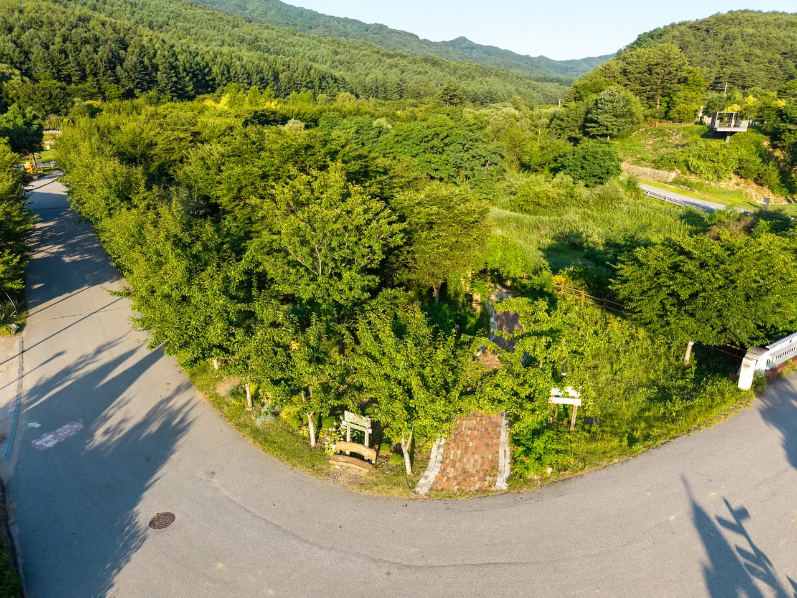
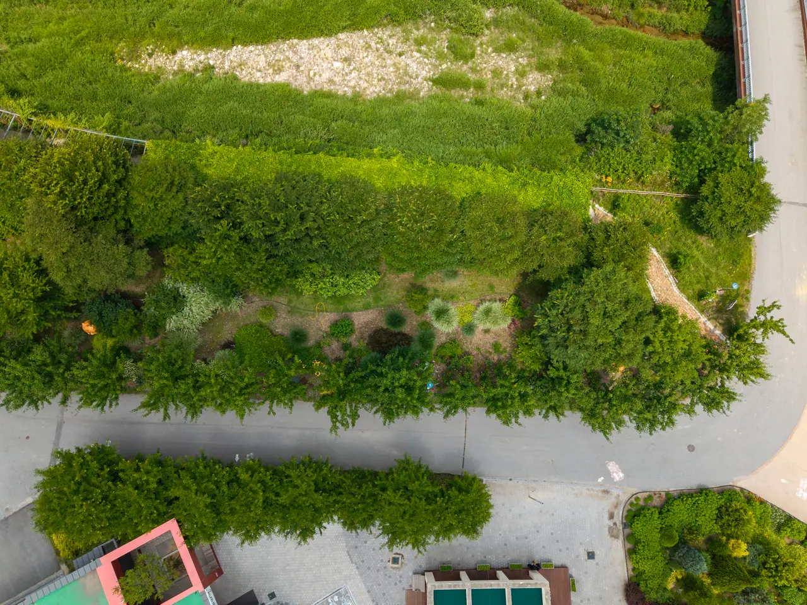
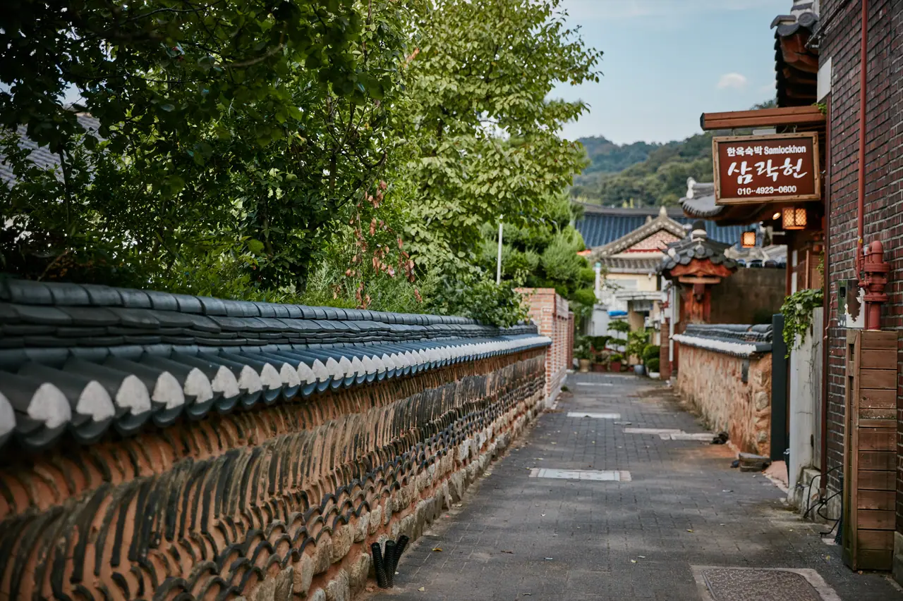

▲ 전주 한옥마을. 차가 흔하지 않던 시절에 형성된 곳은 주차장을 새로 낼 땅이 없다 ⓒ 한국관광공사 (공공누리 제1유형)
여행 후기에는 대개 이런 것이 적혀 있습니다.
풍경, 음식, 숙소.
그런데 실제로 하루를 망치는 것은 대개 다른 것입니다. 주차입니다.
1. 주차가 어려운 곳의 공통점
| 유형 | 왜 어려운가 |
|---|---|
| 국립공원 | 주차 면수는 정해져 있는데 체류 시간이 길다 — 회전율 최악 |
| 구도심 명소 | 옛 도시 구조라 주차장을 만들 땅이 없다 |
| 축제 기간 소도시 | 평소 수요의 수십 배가 몰린다 |
| 섬 선착장 | 배 시간에 맞춰 동시에 몰린다 |
| 일출·일몰 명소 | 특정 시각에 집중 — 분산이 안 된다 |
📍 '면수'보다 '회전율'입니다
주차장이 커도 사람들이 오래 머무는 곳은 어렵습니다. 등산이나 트레킹처럼 3~4시간을 쓰는 곳은 오전에 들어간 차가 오후까지 안 빠집니다.
반대로 사진만 찍고 떠나는 전망대는 주차장이 작아도 계속 자리가 납니다. 체류 시간이 짧으면 회전이 빠릅니다.

▲ 구도심 명소의 골목. 진입은 되지만 세울 곳이 없다 ⓒ 한국관광공사 (공공누리 제1유형)

▲ 인천 연안여객터미널. 섬 선착장은 배 시간에 맞춰 차가 한꺼번에 몰린다 ⓒ 인천광역시 (공공누리 제1유형)

▲ 남해 설리스카이워크. 일출·일몰 명소는 특정 시각에 수요가 집중돼 분산이 안 된다 ⓒ 경상남도 남해군 (공공누리 제1유형)
2. 반대로 수월한 곳
| 유형 | 이유 |
|---|---|
| 대형 해변 | 해안을 따라 주차 구역이 길게 이어짐 |
| 휴게소형 관광지 | 애초에 차를 전제로 설계됨 |
| 신설 전망대·출렁다리 | 최근 조성돼 주차장을 함께 지음 |
| 수목원·자연휴양림 | 넓은 부지에 주차장이 분산 |
공통점이 보입니다. 최근에 만들어졌거나, 처음부터 차로 오는 것을 전제한 곳입니다.
반대로 어려운 곳은 차가 흔하지 않던 시절에 형성된 장소입니다. 구도심 명소가 대표적입니다. 땅값과 문화재 보호 문제로 주차장을 새로 만들 수도 없습니다.

▲ 부산 가덕해양파크휴게소. 애초에 차로 오는 것을 전제로 지어 주차 면수부터 다르다 ⓒ 부산광역시 (공공누리 제1유형)

▲ 부산 송도해수욕장. 대형 해변은 해안을 따라 주차 구역이 길게 이어진다 ⓒ 한국관광공사 (공공누리 제1유형)

▲ 연천 아우라지 출렁다리. 최근 조성된 곳은 주차장을 함께 지어 여유가 있다 ⓒ 경기도 (공공누리 제1유형)

▲ 국립백두대간수목원. 부지가 넓어 주차장이 여러 곳에 분산된다 ⓒ 한국수목원정원관리원 (공공누리 제1유형)
3. 가기 전에 난도를 가늠하는 법
후기에 안 나와 있어도 직접 확인할 수 있습니다.
✅ 지도 앱으로 5분이면 됩니다
· 위성사진으로 전환해 주차장 면적을 눈으로 확인합니다
· 진입로가 편도 몇 차로인지 봅니다 — 1차로면 막히면 답이 없습니다
· 주변에 대체 주차장이 있는지 미리 찍어둡니다
· 로드뷰로 주차장 입구 형태를 봅니다 — 좁은 입구는 병목이 됩니다
· 리뷰에서 '주차'로 검색합니다 — 불만은 대개 적혀 있습니다
📍 편도 1차로 진입로가 가장 위험합니다
주차장이 차면 들어가려는 차와 나오려는 차가 한 차로에서 만납니다. 이때부터는 주차장이 아니라 진입로 전체가 정체됩니다.
더 큰 문제는 포기하고 돌아 나오는 것조차 어려워진다는 점입니다. 뒤로 차가 계속 들어오기 때문입니다. 진입 전에 대체 주차장을 확보해두는 이유입니다.

▲ 위에서 내려다보면 주차 면적과 진입로 폭이 그대로 드러난다. 지도 위성사진이 하는 일이다 ⓒ 한국수목원정원관리원 (공공누리 제1유형)
4. 가장 확실한 해법은 시간입니다
| 도착 | 상황 |
|---|---|
| 오전 8시 이전 | 대부분 여유 — 주차장 선택 가능 |
| 오전 10~11시 | 가장 붐비는 시간대 |
| 오후 2~3시 | 오전 방문객이 빠지며 일부 회전 |
| 오후 4시 이후 | 여유 — 다만 관람 시간이 부족 |
한두 시간 앞당기는 것만으로 문제의 대부분이 사라집니다. 그런데 대부분은 숙소에서 느긋하게 나와 가장 붐비는 시간에 도착합니다.
✅ 시간을 못 당긴다면
· 인기 명소를 마지막이 아니라 첫 일정으로 배치합니다
· 점심시간(12~1시)에 잠깐 자리가 나는 곳이 있습니다
· 대중교통 환승주차장이 운영되는 곳은 그쪽이 빠릅니다
· 성수기 국립공원은 셔틀버스가 운영되기도 합니다
5. 갓길 주차의 대가
자리를 못 찾으면 결국 갓길이나 이면도로에 세우게 됩니다.
📍 관광지 주변은 단속이 강합니다
축제나 성수기에는 임시 단속이 집중됩니다. 주민 신고도 늘어납니다.
주정차 위반 과태료는 승용차 4만 원이고, 동일 장소 2시간 이상이면 5만 원입니다. 관광지는 몇 시간씩 세워두게 되므로 가중 대상이 되기 쉽습니다.
자세한 기준과 이의신청 절차는 주정차 과태료 정리에서 다뤘습니다.
⚠️ 과태료보다 위험한 경우
· 소화전 앞·교차로 모퉁이는 계도 없이 즉시 부과됩니다
· 산간 도로 굽잇길 갓길 주차는 사고 위험이 큽니다
· 편도 1차로 갓길 주차는 뒤차 흐름을 완전히 막습니다
· 견인되면 과태료에 견인·보관료가 추가됩니다

▲ 구도심 골목은 갓길이라 부를 폭도 없다. 세우는 순간 통행이 막힌다 ⓒ 한국관광공사 (공공누리 제1유형)
6. 전기차라면 하나 더 있습니다
전기차는 주차와 충전을 함께 계산해야 합니다.
| 상황 | 내용 |
|---|---|
| 충전기 수 | 주차 면수 대비 매우 적음 |
| 점유 | 충전 끝난 차가 그대로 서 있는 경우가 많음 |
| 대안 | 인근 고속도로 휴게소에서 미리 채우기 |
관광지 충전기를 계획에 넣지 않는 편이 안전합니다. 있으면 다행이고, 없어도 문제가 없도록 도착 전에 채워두는 것이 원칙입니다.
충전구역 점유 문제와 과태료 개정 움직임은 충전구역 얌체 주차에서 다뤘습니다.
7. 정리
주차 난도를 가르는 것은 주차장 크기가 아니라 회전율입니다. 국립공원처럼 체류 시간이 긴 곳은 면수가 많아도 어렵고, 전망대처럼 짧게 머무는 곳은 작아도 자리가 납니다.
가기 전에 지도 위성사진으로 주차장 면적을, 로드뷰로 진입로 폭을 확인하면 대부분 가늠됩니다. 특히 편도 1차로 진입로는 한 번 막히면 되돌아 나오기도 어렵습니다.
가장 확실한 해법은 도착 시간을 1~2시간 앞당기는 것입니다. 갓길 주차는 승용차 4만 원, 2시간 이상이면 5만 원이며 관광지 주변은 단속이 집중됩니다. 전기차라면 도착 전에 충전을 마치는 편이 안전합니다.